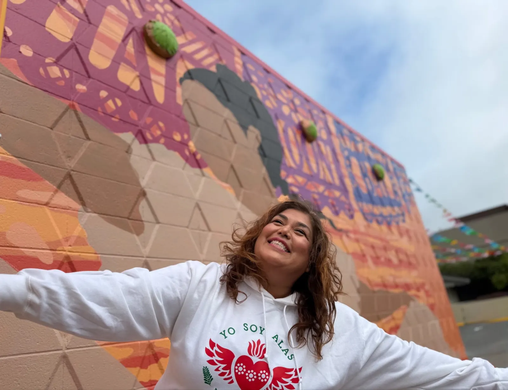
La Cultura Cura.
Culture Heals.
ALAS is reimagining what is possible when love, culture, and community lead the way.
Get involved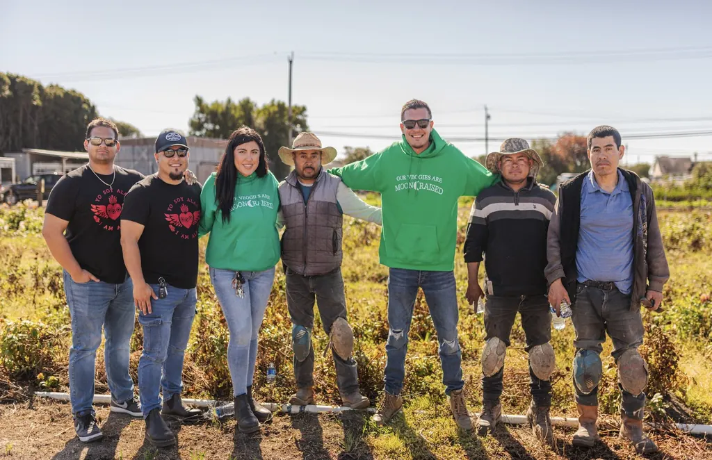
Latino-led non-profit rooted in the strength of immigrant and farmworker communities
What we believe
-
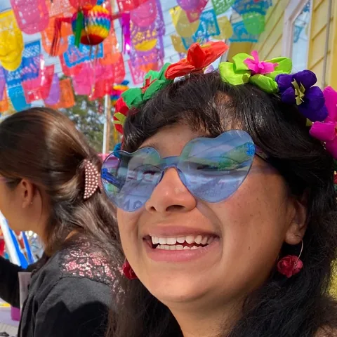
Love Changes Lives
Everyone deserves to be seen, loved, and treated with dignity. Our shared humanity connects us, and when we feel we belong, anything is possible.
-
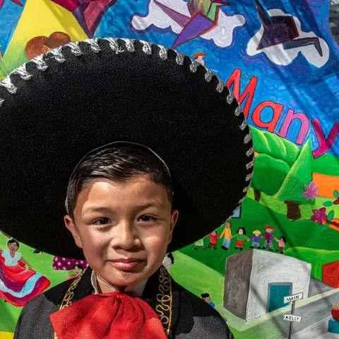
Culture Is Medicine
Through art, music, dance, and celebration, we honor our roots, inspire pride, and heal together.
-
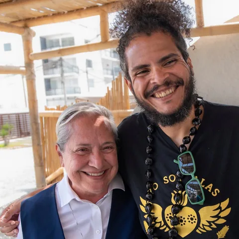
The Power of
Our CommunitiesOur communities are full of strength, wisdom, and courage. Together, we rise beyond survival, reclaim our stories, and build the future we dream of.
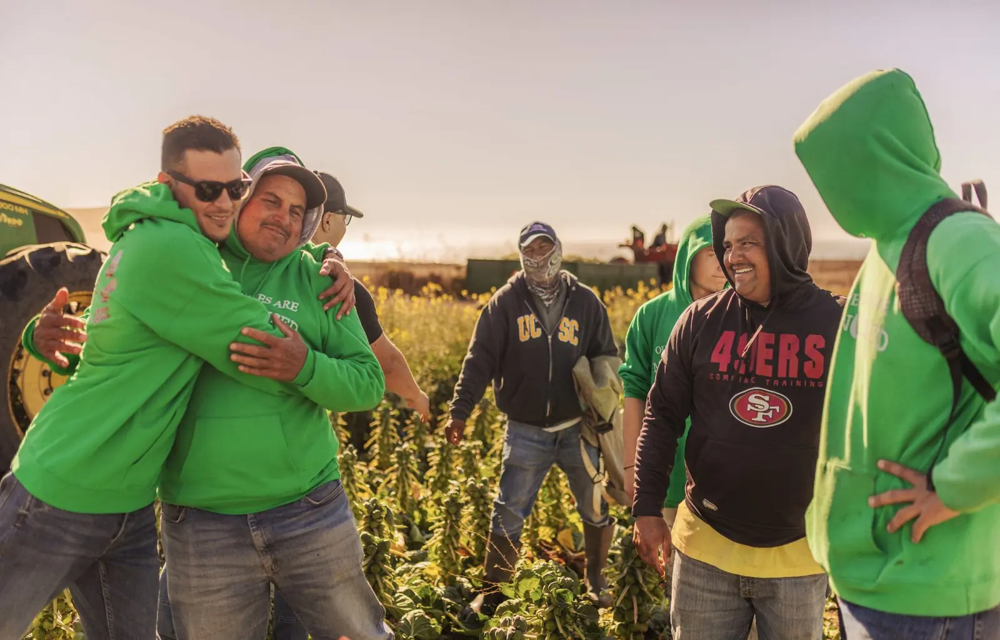
Our Model
For Change
At ALAS, we believe everyone deserves to live with love, dignity, and joy.
La Cultura Cura is how we turn love into transformation.
Step 1 of 6
Culture + Arts
Our model begins with culture: art, music, and cultural traditions.
Learn more about our modelStep 2 of 6
Belonging
We build trusting relationships and a deep sense of belonging.
Learn more about our modelStep 3 of 6
Healing + Hope
With that trust, people begin their journeys of healing and mental wellbeing. Healing ignites hope and hope awakens ganas.
Learn more about our modelStep 4 of 6
Leadership
As individuals and families pursue educational and economic opportunities, they grow as leaders.
Learn more about our modelStep 5 of 6
Family + Community Wellbeing
They transform their lives and strengthen their communities.
Learn more about our modelStep 6 of 6
Systems Change + Narrative Change
Through our groundbreaking research, we change policies, shape new narratives, and pollinate other communities.
Learn more about our model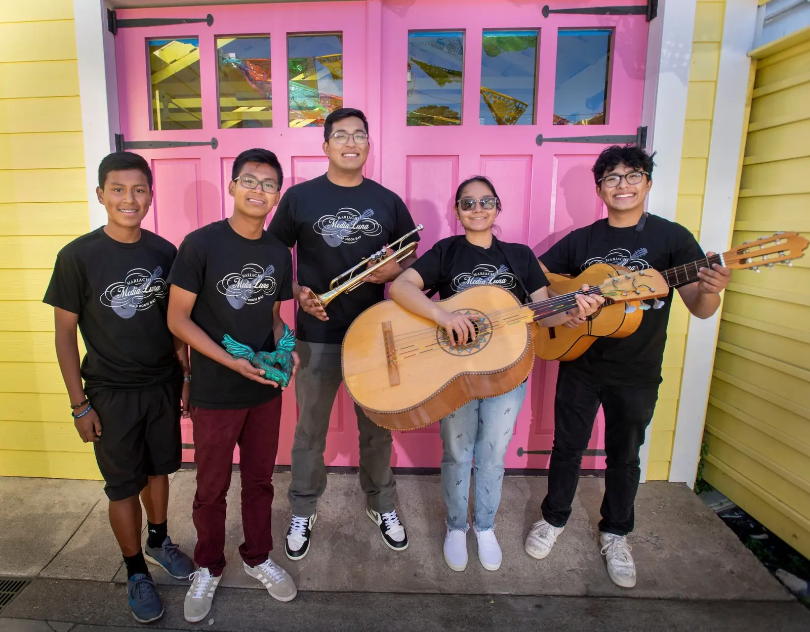
Our programs
-
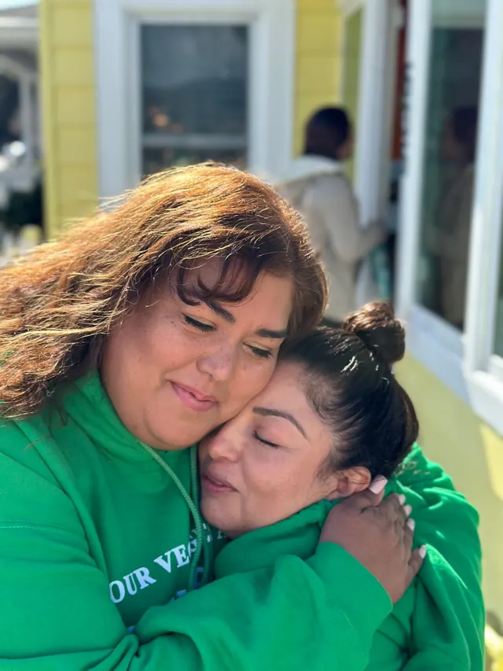
Mental Health & Wellbeing
Explore: Mental Health & WellbeingThrough culturally rooted mental health care, healing circles, and wellness practices, we help people reclaim their strength, rediscover their ganas, and reconnect with their dreams.
-
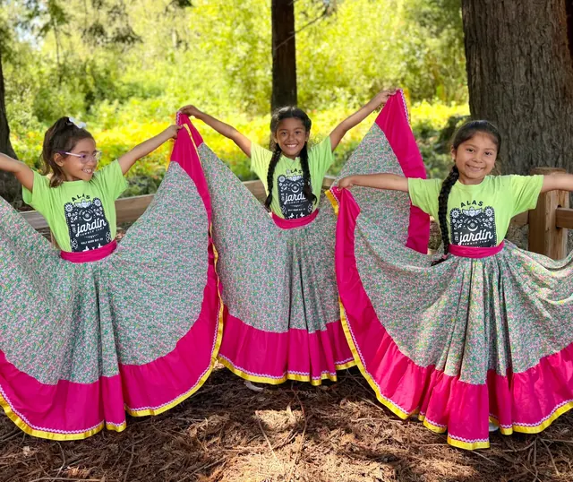
Cultural Arts & Youth Development
Explore: Cultural Arts & Youth DevelopmentThrough music, dance, art, mentorship, and adventure, young people celebrate their heritage, discover their talents, and find the courage to dream big and lead.
-
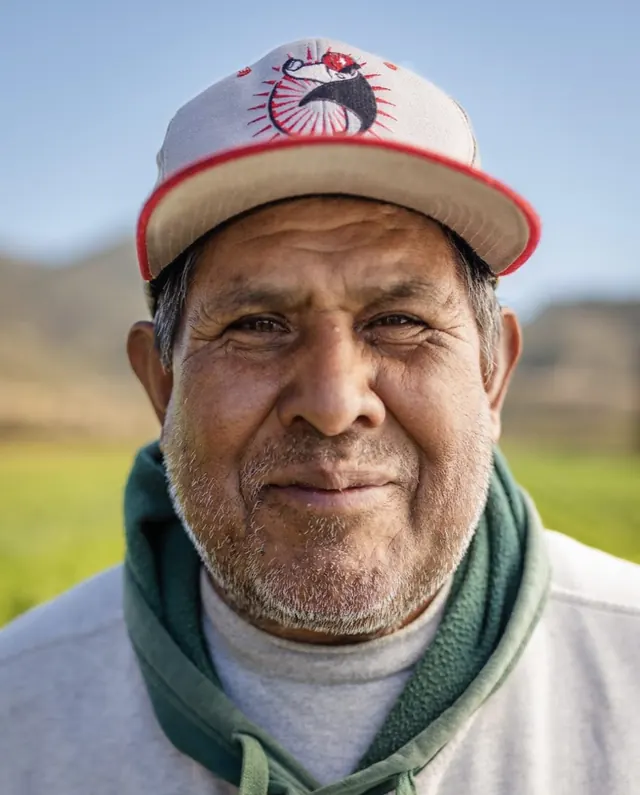
Farmworker & Family Wellbeing
Explore: Farmworker & Family WellbeingFrom our groundbreaking Equity Express Bus to family wellness and housing advocacy, we break down barriers and open new pathways to dignity, opportunity, and wellbeing for families.
-
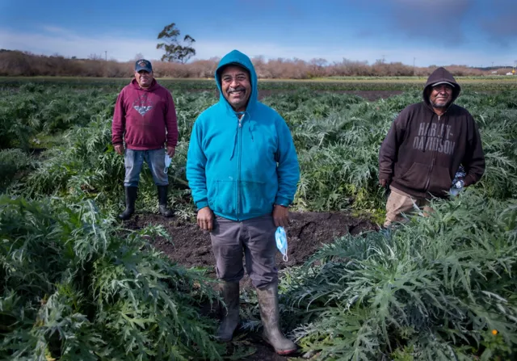
Research & Systems Change
Explore: Research & Systems ChangeThrough our Colibrí Research Center, we bring community wisdom and groundbreaking research together to challenge harmful narratives, shape policies, and inspire lasting change.
- Explore all our programs
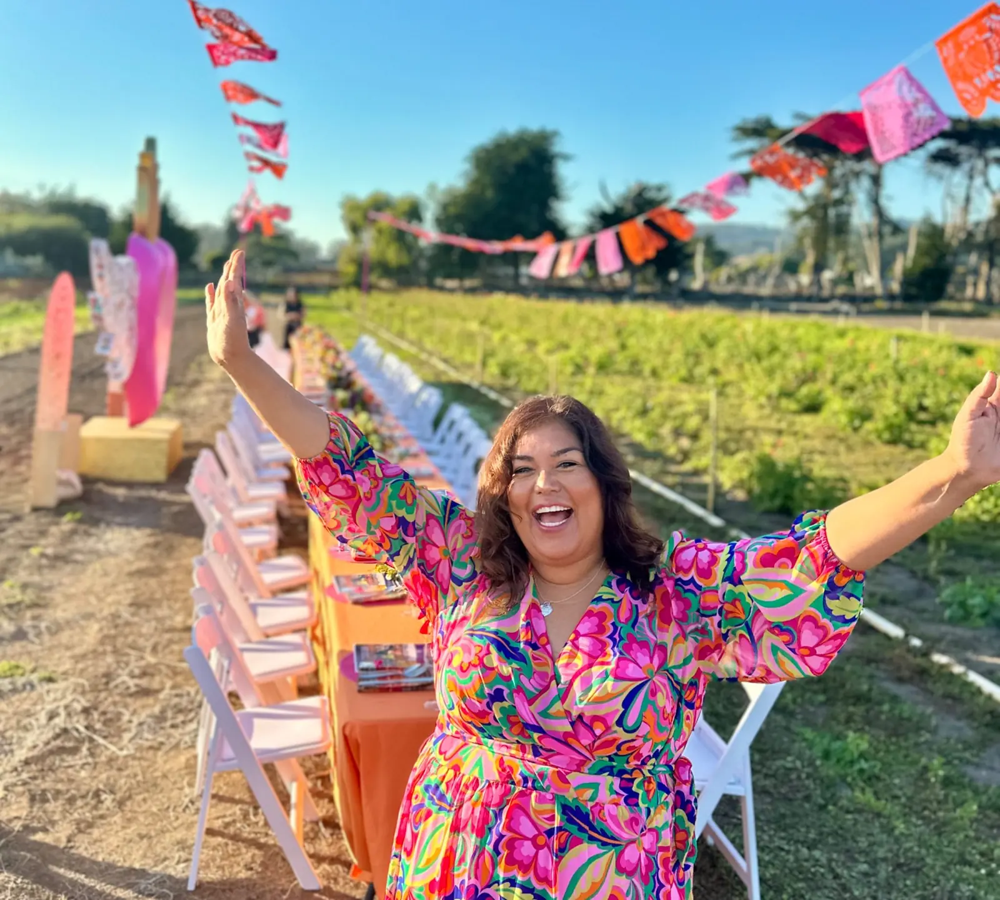

Community story
Meet Elkin
We watched him grow from a young violinist in our Mariachi program into a UC Berkeley graduate and an Emmy Award-winning producer.
This is what we dream of at ALAS. Seeing our youth rise, seeing dreams come to reality.
JOIN OUR MOVEMENT
Help us build a world where everyone belongs.
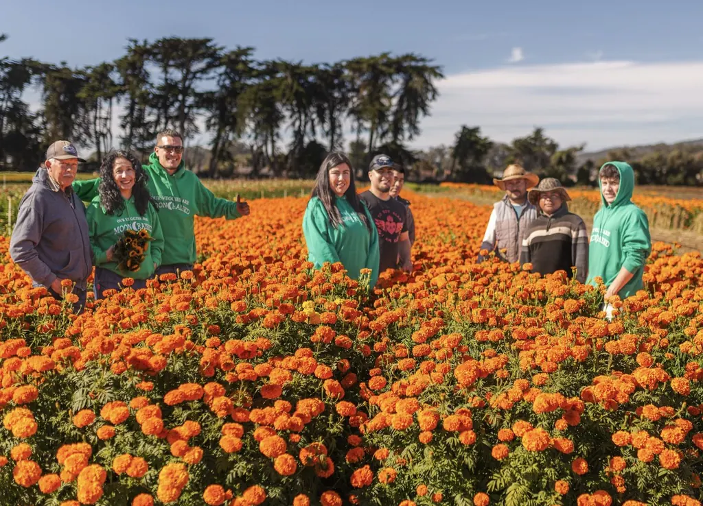
-
See how culture and healing transform lives.
Explore our programs -
Receive stories and invitations to our celebrations.
-
Help more families experience love, dignity, and joy.
Get involved